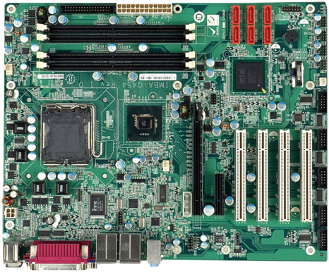

FORMAT ATX
Format ATX został opatentowany przez firmę Intel w 1995 roku. W porównaniu do wcześniejszych konstrukcji AT, w formacie ATX
nastąpiły duże zmiany. Zalety tej zmiany były oczywiste.
ATX wyparł swojego poprzednika z rynku stając się nowym standardem, który jest najbardziej popularnym formatem płyt aż do dnia dzisiejszego.
Format ATX wyróżnia się między innymi:
- format ATX jednoznacznie określa, w którym miejscu ma się znajdować procesor,
dzięki czemu umożliwiło to instalowanie dłuższych kart w slotach PCI oraz ISA
- gniazdo zasilające płytę główną
- porty -standard ATX zakładał taką konstrukcję płyt i obudów, aby możliwe było umieszczenie portów bezpośrednio na tylnej ścianie obudowy
- funkcja Soft Power -umożliwia ona kontrolę zasilania z poziomu systemu operacyjnego
- chłodzenie -dzięki zmienionej konstrukcji obudowy, poprzez jednoczesny nawiew i wywiew powietrza,
chłodzenie komputera stało się bardziej wydajne
- pojawiły się już zintegrowania typu karty graficzne, karty dźwiękowe, karty sieciowe
